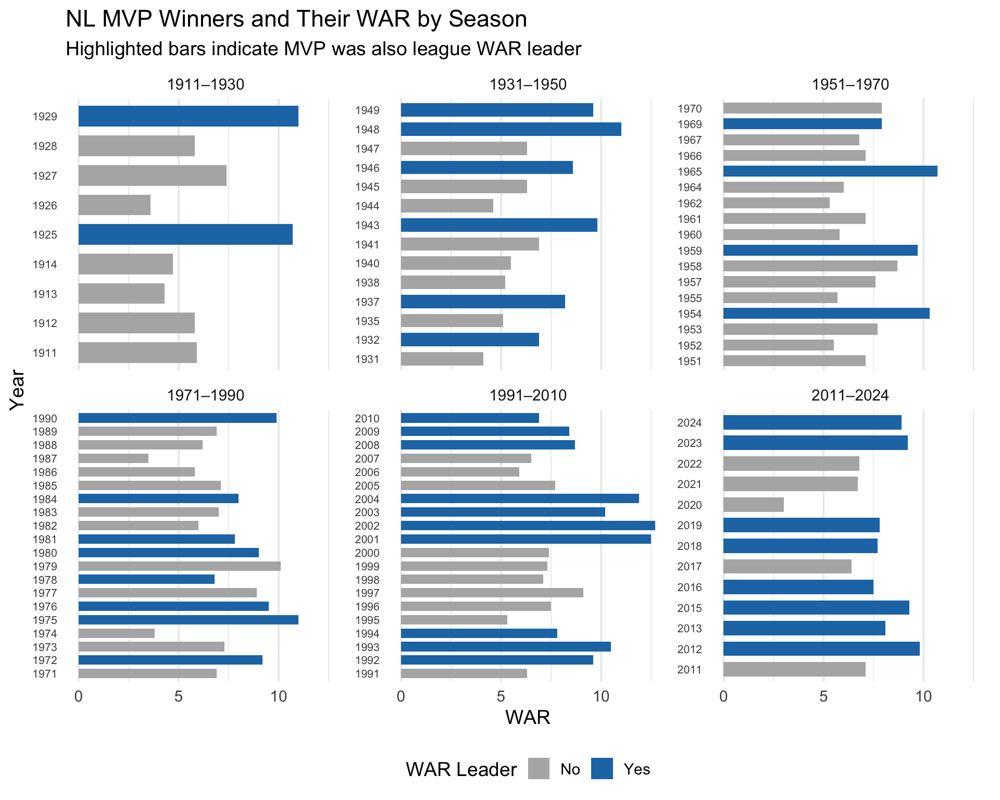
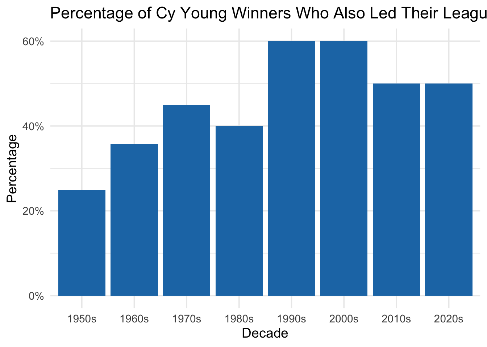

When it comes to comprehensively evaluating a player’s contributions, there is no stat more referenced than wins above replacement (WAR). WAR uses a formula of several other statistics in an attempts to quantify a player’s total contribution to their team. A baseline value of WAR is 0, which represents a “replacement level player”. A replacement level player is a prototypical player who is easily acquirable and can be used to easily replace other players. It is important to distinguish between a replacement level player and an average player. An average player in the MLB has a WAR above 0, coalescing around 2. WAR has been a mainstream stat for a little over 10 years, and I am interested to see its impact on the awards voting over time.
3.0.1 Question:
Has the popularization of WAR impacted the frequency in which the player with the highest WAR wins Most Valuable player or Cy Young?
To note, there are two different calculations of WAR that are regularly referenced, bWAR and fWAR. While the underlying formulas are different, the results of these calculations are often similar. The pybaseball package sources data from FanGraphs which uses fWAR.
X playerID bbrefID full_name awardID yearID lgID
1 4 aaronha01 aaronha01 Hank Aaron Most Valuable Player 1957 NL
2 40 abreujo02 abreujo02 Jose Abreu Most Valuable Player 2020 AL
3 72 acunaro01 acunaro01 Ronald Acuña Most Valuable Player 2023 NL
4 152 allendi01 allendi01 Dick Allen Most Valuable Player 1972 AL
5 239 altuvjo01 altuvjo01 Jose Altuve Most Valuable Player 2017 AL
key_fangraphs IDfg_x HR AVG RBI SO OBP SLG OPS wOBA wRC wRC. WAR
1 1000001 1000001 44 0.322 132 58 0.378 0.600 0.978 0.419 128 164 7.6
2 15676 15676 19 0.317 60 59 0.370 0.617 0.987 0.411 53 164 2.9
3 18401 18401 41 0.337 106 84 0.416 0.596 1.012 0.428 156 171 9.2
4 1000137 1000137 37 0.308 113 126 0.420 0.603 1.023 0.450 123 199 8.0
5 5417 5417 24 0.346 81 84 0.410 0.547 0.957 0.405 128 160 7.7
Hard. OBP. SLG. ISO. BABIP. Hard.. EV LA Barrels Barrel. maxEV HardHit
1 NA 114 144 189 106 NA NA NA NA NA NA NA
2 0.396 116 149 175 120 122 92.9 10.9 26 0.143 114.0 97
3 0.461 129 143 155 114 140 94.7 7.4 86 0.153 121.2 310
4 NA 133 169 269 127 NA NA NA NA NA NA NA
5 0.282 126 127 116 124 87 86.1 9.7 34 0.067 109.1 145
HardHit. Events G PA H IDfg_y year league WAR.leader.flag
1 NA 0 151 675 198 NA NA 0
2 0.533 182 60 262 76 15676 2020 AL 0
3 0.552 562 159 735 217 18401 2023 NL 1
4 NA 0 148 609 156 1000137 1972 AL 1
5 0.284 511 153 662 204 5417 2017 AL 0
Code
library(ggplot2)library(dplyr)# Ensure war_leader_flag is treated as logical or factor for coloringplot_df <- mvp_df_h %>%mutate(war_leader_flag =as.factor(WAR.leader.flag),year =as.factor(year) # treat year as categorical for bar chart )
Code
library(dplyr)library(ggplot2)# Build AL plotting data, including period_labelplot_df_AL <- mvp_df_h %>%mutate(year_num =as.integer(yearID),# define 20-year periods starting from 1911period_start =floor((year_num -1911) /20) *20+1911,period_end = period_start +19L,period_label =paste0(period_start, "–", period_end),WAR.leader.flag =as.factor(WAR.leader.flag),year_f =factor(year_num) ) %>%filter(lgID =="AL")# Custom colorshighlight_colors <-c("0"="gray70", "1"="#1f78b4")ggplot(plot_df_AL, aes(x = WAR, y = year_f, fill = WAR.leader.flag)) +geom_col(width =0.7) +scale_fill_manual(name ="WAR Leader",values = highlight_colors,labels =c("No", "Yes") ) +labs(title ="AL MVP Winners and Their WAR by Season",subtitle ="Highlighted bars indicate MVP was also league WAR leader",x ="WAR",y ="Year" ) +facet_wrap(~ period_label, scales ="free_y") +theme_minimal(base_size =14) +theme(legend.position ="bottom",panel.grid.major.y =element_blank(),axis.text.y =element_text(size =8) )

Code
plot_df_NL <- mvp_df_h %>%mutate(year_num =as.integer(yearID),period_start =floor((year_num -1911) /20) *20+1911,period_end = period_start +19L,period_label =paste0(period_start, "–", period_end),WAR.leader.flag =as.factor(WAR.leader.flag),year_f =factor(year_num) ) %>%filter(lgID =="NL")ggplot(plot_df_NL, aes(x = WAR, y = year_f, fill = WAR.leader.flag)) +geom_col(width =0.7) +scale_fill_manual(name ="WAR Leader",values = highlight_colors,labels =c("No", "Yes") ) +labs(title ="NL MVP Winners and Their WAR by Season",subtitle ="Highlighted bars indicate MVP was also league WAR leader",x ="WAR",y ="Year" ) +facet_wrap(~ period_label, scales ="free_y") +theme_minimal(base_size =14) +theme(legend.position ="bottom",panel.grid.major.y =element_blank(),axis.text.y =element_text(size =8) )
The graphs show that the prediction power of WAR on MVP winning grew significantly in the late-2000s. From that point on, the MVP is the WAR leader for a majority of the years. To note, I have seen a similar published online, although I am not able to locate it at the moment. However, I believe that the year range was much more limited for that graph, perhaps 2000-2017.
library(ggplot2)ggplot(mvp_decade, aes(x =factor(decade_label, levels = decade_label),y = pct_war_leader)) +geom_col(fill ="#1f78b4") +scale_y_continuous(labels = scales::percent_format(accuracy =1)) +labs(title ="Percentage of MVPs Who Also Led Their League in WAR by Decade",x ="Decade",y ="Percentage" ) +theme_minimal(base_size =14)
This graph counts MVPs who also led their league in WAR and aggregates by decade. The 2010s and 2020s are the two decades with the highest percentages of MVPs who also led the league in WAR.
Code
head(cy_df, 5)
X playerID bbrefID full_name awardID yearID lgID
1 117 alcansa01 alcansa01 Sandy Alcantara Cy Young Award 2022 NL
2 431 arrieja01 arrieja01 Jake Arrieta Cy Young Award 2015 NL
3 631 bauertr01 bauertr01 Trevor Bauer Cy Young Award 2020 NL
4 708 bedrost01 bedrost01 Steve Bedrosian Cy Young Award 1987 NL
5 1014 biebesh01 biebesh01 Shane Bieber Cy Young Award 2020 AL
key_fangraphs IDfg_x W L ERA GS G CG SV IP SO K.9 WHIP FIP SwStr.
1 18684 18684 14 9 2.28 32 32 6 0 228.2 207 8.15 0.98 2.99 0.122
2 4153 4153 22 6 1.77 33 33 4 0 229.0 236 9.28 0.86 2.35 0.111
3 12703 12703 5 4 1.73 11 11 2 0 73.0 100 12.33 0.79 2.88 0.129
4 1000766 1000766 5 3 2.83 0 65 0 40 89.0 74 7.48 1.20 3.79 NA
5 19427 19427 8 1 1.63 12 12 0 0 77.1 122 14.20 0.87 2.07 0.171
ERA. FIP. K. BB. K.9. K.BB. WHIP. AVG. K.. Hard.. Soft.. EV LA
1 55 75 0.234 0.056 94 152 77 87 103 87 126 87.8 5.5
2 45 61 0.271 0.055 118 184 67 73 131 75 123 85.1 4.4
3 36 62 0.360 0.061 135 231 60 66 152 76 122 88.5 20.9
4 67 92 0.202 0.077 124 149 88 92 129 NA NA NA NA
5 37 46 0.411 0.071 158 226 65 69 177 81 124 89.3 9.6
Barrel. WAR IDfg_y year league WAR.leader.flag
1 0.053 5.9 NA NA 0
2 0.022 7.0 4153 2015 NL 0
3 0.063 2.6 12703 2020 NL 0
4 NA 0.8 1000766 1987 NL 0
5 0.072 3.1 19427 2020 AL 1
Code
library(dplyr)library(ggplot2)plot_df_AL_cy <- cy_df %>%mutate(year_num =as.integer(yearID),# --- define 20-year periods starting from 1956 ---period_start =floor((year_num -1956) /20) *20+1956,period_end = period_start +19L,period_label =paste0(period_start, "–", period_end),WAR.leader.flag =as.factor(WAR.leader.flag),year_f =factor(year_num) ) %>%filter(lgID =="AL")highlight_colors <-c("0"="gray70", "1"="#1f78b4")ggplot(plot_df_AL_cy, aes(x = WAR, y = year_f, fill = WAR.leader.flag)) +geom_col(width =0.7) +scale_fill_manual(name ="WAR Leader",values = highlight_colors,labels =c("No", "Yes") ) +labs(title ="AL Cy Young Winners and Their WAR by Season",subtitle ="Highlighted bars indicate Cy Young winner was also league WAR leader",x ="WAR",y ="Year" ) +facet_wrap(~ period_label, scales ="free_y") +theme_minimal(base_size =14) +theme(legend.position ="bottom",panel.grid.major.y =element_blank(),axis.text.y =element_text(size =8) )
library(ggplot2)ggplot(cy_decade,aes(x =factor(decade_label, levels = decade_label),y = pct_war_leader)) +geom_col(fill ="#1f78b4") +scale_y_continuous(labels = scales::percent_format(accuracy =1)) +labs(title ="Percentage of Cy Young Winners Who Also Led Their League in WAR by Decade",x ="Decade",y ="Percentage" ) +theme_minimal(base_size =14)

When it comes to Cy Young, there does not seem to be a pronounced shift towards WAR leaders in recent decades. The 1990s and 2000s had a higher proportion of WAR-leading Cy Young winners than the 2010s and 2020s. While there are always star players, there were some all-time elite pitchers who were at their peaks during the late 1990s and early 2000s. Randy Johnson, Pedro Martinez, and Roger Clemens combined for 14 Cy Young awards between 1995 and 2004. These singular talents may have accumulated a relatively outsized WAR for a given season, which could be why the 1990s and 2000s have the highest proportion of WAR-leading Cy Young award winners.
To note, WAR leader is calculated within the population of pitchers only. The same applies for the hitter/MVP analysis above. Pitchers are not ranked against hitters and vice versa. Shohei Ohtani may be an exception, as he plays both pitcher and hitter.
3.0.3 Individual Statistics
WAR attempts to summarize the effectiveness of a player in a single metric. However, MVP and Cy Young voting are a holistic process, where voters consider a variety of statistics.
3.0.4 Question:
Which individual statistics are drivers of the MVP and Cy Young award?